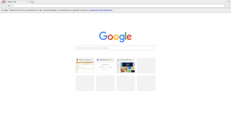
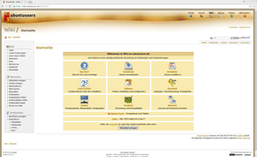
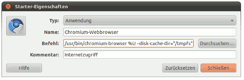
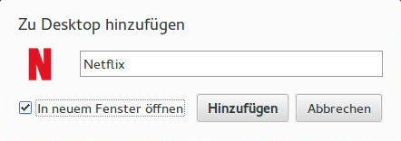
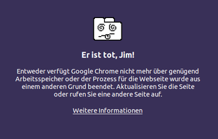

Chromium
Dieser Artikel wurde für die folgenden Ubuntu-Versionen getestet:
Ubuntu 16.04 Xenial Xerus
Ubuntu 14.04 Trusty Tahr
Zum Verständnis dieses Artikels sind folgende Seiten hilfreich:
 Chromium
Chromium  ist ein Webbrowser, der sich durch eine einfache Oberfläche und Bedienung auszeichnet. Wichtigste Bestandteile sind WebKit bzw. deren Abspaltung Blink (ab Version 28) und die JavaScript-Engine V8. Entwickelt wird das Open Source-Projekt Chromium hauptsächlich durch die Firma Alphabet Inc. (Google Inc.). Der Browser kann durch zusätzliche Anwendungen, Spiele und Themes an die eigenen Bedürfnisse angepaßt werden. Chromium verfügt über eine integrierte Lösung zum Übersetzen von Internetseiten, welche auf Google Translate basiert.
ist ein Webbrowser, der sich durch eine einfache Oberfläche und Bedienung auszeichnet. Wichtigste Bestandteile sind WebKit bzw. deren Abspaltung Blink (ab Version 28) und die JavaScript-Engine V8. Entwickelt wird das Open Source-Projekt Chromium hauptsächlich durch die Firma Alphabet Inc. (Google Inc.). Der Browser kann durch zusätzliche Anwendungen, Spiele und Themes an die eigenen Bedürfnisse angepaßt werden. Chromium verfügt über eine integrierte Lösung zum Übersetzen von Internetseiten, welche auf Google Translate basiert.
Das kalifornische Unternehmen veröffentlicht eine leicht modifizierte Variante von Chromium unter dem Namen Google Chrome. Zu den Unterschieden zwischen Chromium und Google Chrome findet man weiter unten im Artikel Informationen.
Weitere Browser, die ebenfalls auf WebKit basieren, sind u.a. Arora, Epiphany, Midori, QupZilla und rekonq.
Installation¶
Die verschiedenen Installationsmöglichkeiten für Chromium und Google Chrome werden im Unterartikel Chromium/Installation behandelt. Beide Browser können auf Wunsch auch parallel installiert und genutzt werden, da Google Chrome nicht in /usr/bin/, sondern im Ordner /opt/google/chrome/ residiert. Allerdings muss man sich für einen Standard-Webbrowser entscheiden.
|  |
| Chromium |
|  |
| Chrome |
Benutzung¶
Bei Ubuntu-Varianten mit einem Anwendungsmenü erfolgt der Programmstart [1] über den Eintrag "Internet -> Chromium-Webbrowser". Bei Unity gibt man "Chromium" in der Dash ein und fügt bei Bedarf der Leiste links einen Programmstarter hinzu. Möchte man das Programm in einem Terminalfenster [2] aufrufen, ist zu beachten, dass der Befehl nicht chromium, sondern chromium-browser lautet.
Um sich mit dem Browser vertraut zu machen, kann neben dem Ausprobieren der Funktionen auch die Lektüre der offiziellen Dokumentation  helfen, hier insbesondere der Abschnitt Erste Schritte .
helfen, hier insbesondere der Abschnitt Erste Schritte .
Auf dem linken Bildschirmfoto zu Chromium sieht man die Ansicht einer neu geöffneten Registerkarte (Tab) mit angepasstem Design. Man erhält auf einen Blick eine Übersicht über häufig besuchte Seiten (die Felder lassen sich beliebig arrangieren) und die letzten geschlossenen Seiten. Bewegt man die Maus auf eines der Vorschaubilder, erscheinen zwei Schaltflächen, mit denen man die Seite "festpinnen" oder entfernen kann.
Der Anwendungsmenü-Eintrag für Google Chrome lautet "Internet -> Google Chrome", der Befehl zum Start über die Kommandozeile /opt/google/chrome/google-chrome. Die von Google offiziell zur Verfügung gestellten Themes für Google Chrome können auch in Chromium verwendet werden.
Startparameter¶
Bestimmte Optionen können direkt beim Programmstart übergeben werden:
/usr/bin/chromium-browser --OPTION="..."
Eine Liste möglicher Parameter ist der Übersicht List of Chromium Command Line Switches zu entnehmen. Des Weiteren werden konkrete Beispiele im weiteren Verlauf des Artikels genannt.
Statt gewünschte Startparameter für jeden einzelnen Benutzer zu setzen, kann man auch die Datei /etc/chromium-browser/default für systemweite Vorgaben nutzen. Diese Methode ist meist einfacher umzusetzen, als den Programmstarter /usr/share/applications/chromium-browser.desktop individuell anzupassen.
Möchte man Google Chrome Optionen übergeben, verwendet man den folgenden Befehl:
/opt/google/chrome/google-chrome --OPTION="..."
Pseudo-Adressen¶
Chromium und "Google Chrome" kennen einige interessante interne Adressen, die über die Adresszeile aufgerufen werden können. Eine kleine Auswahl:
| Pseudo-Adressen | ||
| Chromium | Google Chrome | Beschreibung |
chromium://history/ | chrome://history/ | Browserverlauf einsehen. |
chromium://settings/ | chrome://settings/ | Einstellungen aufrufen. |
chromium://extensions/ | chrome://extensions/ | Erweiterungen verwalten. |
chromium://terms/ | chrome://terms/ | Nutzungsbedingungen |
chromium://plugins | chrome://plugins | Übersicht zu den installierten Erweiterungen. |
chromium://devices/ | chrome://devices/ | Geräte verwalten |
chromium://dns | chrome://dns | Übersicht zu aufgerufenen Links um mittels DNS Prefetching die Ladezeiten zu verkürzen. |
chromium://cache | chrome://cache | Daten im Zwischenspeicher des Browsers. |
chromium://version | chrome://version | Verwendete Version von Chrome |
chromium://help/ | chrome://help/ | Hilfe aufrufen |
chromium://chrome-urls | chrome://chrome-urls | Über diese Adresse erhält man einen Übersicht zu allen verfügbaren Adressen des Browsers. |
Alternativ kann man bei beiden Browsern auch die von Firefox gewohnte Syntax mit about: verwenden.
Erweiterungen¶
Grundlagen zur Installation und Verwaltung von Erweiterungen sowie einige empfehlenswerte oder häufig genutzte sind im Unterartikel Chromium/Erweiterungen zu finden.
Plugins¶
Der Unterartikel Chromium/Plugins behandelt die Einbindung von Adobe Flash, Java oder eines PDF-Anzeigeprogramms in Chromium bzw. Google Chrome. Speziell KDE-Nutzer könnten sich für KParts interessieren.
Tipps¶
Passwörter im GNOME-Keyring speichern¶
In der Voreinstellung werden alle Passwörter im Klartext gespeichert. Um das zu ändern, muss man die Konfiguration anpassen. Um die Passwörter im GNOME-Keyring zu speichern, muss die Option --password-store=gnome gesetzt sein. Am einfachsten trägt man das mit Root-Rechten in die Datei /etc/chromium-browser/default ein:
CHROMIUM_FLAGS="--password-store=gnome"
Proxy-Nutzung¶
Während Chromium unter GNOME und KDE automatisch die systemweiten Proxy-Einstellungen berücksichtigt, müssen Benutzer anderer Desktop-Umgebungen wie Xfce und LXDE oder alternativer Fenstermanager selbst Hand anlegen. Prinzipiell gibt es vier Möglichkeiten. Beispiele:
Proxy in /etc/profile eintragen
Umgebungsvariable verwenden:
/usr/bin/env http_proxy="http://127.0.0.1:8118" && /usr/bin/chromium-browser
Parameter bei Programmstart verwenden:
/usr/bin/chromium-browser --proxy-server="localhost:8118"
Die Datei /etc/chromium-browser/default mit Root-Rechten bearbeiten, um systemweite Programmparameter zu setzen (hier als Variante mit einer PAC-Datei):
CHROMIUM_FLAGS=" --proxy-pac-url=http://192.168.0.1/proxy.pac"
Die IP-Adresse und der Port müssen den vorhandenen Gegebenheiten entsprechend angepasst werden. Alternativ können auch die Erweiterungen Foxy Proxy oder Proxy SwitchySharp genutzt werden, die eine dynamische Proxy-Nutzung ermöglichen.
User Agent anpassen¶
Wie auch für andere Webbrowser wie Firefox oder Opera ist es möglich, den User_Agent anzupassen und damit gegenüber Webseitenbetreibern die Information zu verbergen, welchen Browser und welches Betriebssystem man wirklich benutzt. Stattdessen gaukelt man dem Webserver einen anderen Browser oder Betriebssystem vor. Hierzu verwendet man beim Starten von Chromium (z.B. über einen Anwendungsstarter oder im Terminal [2]) folgenden Startparameter:
chromium-browser --user-agent="Mozilla/5.0 (Windows; U; Windows NT 6.1; en-US; rv:1.9.2.3) Gecko/20100401 Firefox/3.6.3"
Weitere Beispiele für andere Browser oder Betriebssysteme (etwa für den Fall, dass z.B. der Internet Explorer Voraussetzung für das Betrachten einer Seite ist) findet man u.a. über die Links.
Verlagerung des Browser-Caches¶
Da ein Browser häufig das meistgenutzte Programm ist, ist es mitunter hilfreich, diesem mitzuteilen, dass den programmeigenen Zwischenspeicher (Cache) in eine vorhandene Verzeichnisstruktur vom Typ tmpfs (z.B. /run/shm) zu schreiben oder eine vorher eingerichtete RAM-Disk zu nutzen (siehe Abbildung rechts). Dies verringert die Schreibzugriffe auf das verwendete Speichermedium bzw. verlagert diese in den schneller verfügbaren Arbeitsspeicher.
Mit Chromium ist die Verlagerung sehr schnell erledigt. Dazu gibt man beim Programmstart z.B. die Option --disk-cache-dir="/run/shm/chromium" mit. Nach einem Neustart des Browsers wird der Cache in den Arbeitsspeicher verlagert und beim Herunterfahren des Rechners automatisch gelöscht. Überprüfen kann man dies, indem man den Ordner /run/shm/ vor und nach der Nutzung von Chromium kontrolliert.
|  |
| Programmstarter modifizieren |
Statt den Programmstarter /usr/share/applications/chromium-browser.desktop zu modifizieren, kann man die systemweite Datei /etc/chromium-browser/default anpassen, die vom Browser-Startskript /usr/bin/chromium-browser berücksichtigt wird. Dabei kann man Cache-Verzeichnisse für jeden Benutzer separat anlegen lassen:
# Default settings for chromium-browser. This file is sourced by /bin/sh from # /usr/bin/chromium-browser CHROMIUM_FLAGS="--disk-cache-dir=/run/shm/$USER/chromium"
Eine andere Methode ist die Verwendung von:
export XDG_CACHE_HOME=/dev/shm
vor dem Programmstart (/dev/shm ist eine Verknüpfung (Symlink) auf /run/shm). Wer bewusst keinen Cache nutzen möchte (nicht empfehlenswert), kann dies über den Startparameter --disk-cache-dir=/dev/null --disk-cache-size=1 erreichen.
Videodienste¶
Für den Aufruf von Videodiensten ist ist nützlich, wenn man eine passende Verknüpfung auf dem Desktop anlegt. Nach dem Login auf der jeweiligen Seite legt man eine Verknüpfung auf dem Desktop an. Hier über das Menü "Weitere Tools → Zu Desktop hinzufügen..." aufrufen und die Verknüpfung wird erstellt. Vor dem speichern der Verknüpfung das Häkchen bei "In neuem Fenster öffnen" anwählen.
Hinweis:
Der Aufruf dieser Videodienste ist durch das DRM nur unter Google Chrome möglich.
|  |
| Desktop-Verknüpfung für Google Chrome |
Eine Übersicht zu den gängigen Diensten:
| Videodienste | ||
| Name | URL | |
| Amazon Prime | Amazon | |
| Maxdome | Maxdome | |
| Netflix | Netflix | |
Alternativ legt man eine .desktop-Datei an [4] und speichert diese unter ~/.local/share/applications/ ab. Die passenden Symbole mit der Suchmaschine des Vertrauens auswählen und in einem Ordner ablegen. Die Pfade in den Beispieldateien müssen bei Bedarf angepasst werden.
amazonprime.desktop¶
[Desktop Entry] Name=Amazon Prime GenericName=Instant Video GenericName[de]=Instant Videos abspielen Comment=Instant Video Exec=/usr/bin/google-chrome --app=http://www.amazon.de/piv Icon=/home/BENUTZERNAME/Bilder/amazonprime.png Terminal=false Type=Application Categories=Multimedia
netflix.desktop¶
[Desktop Entry] Name=Netflix GenericName=Instant Video GenericName[de]=Instant Videos abspielen Comment=Instant Video Exec=/usr/bin/google-chrome --app=https://www.netflix.com/de/ Icon=/home/BENUTZERNAME/Bilder/netflix.png Terminal=false Type=Application Categories=Multimedia
JavaScript-Manipulationen¶
Mit Hilfe von Skripten können das Erscheinungsbild von Webseiten und andere Dinge verändert werden. Unter Firefox ist diese Methode durch das Add-On Greasemonkey bekannt. Eine sehr umfangreiche Sammlung an Skripten findet man beispielsweise auf userscripts.org , der offiziellen Webseite für Skripte dieser Art. Die Skripte können durch Anklicken der entsprechenden Schaltfläche zur Installation angewendet werden und erscheinen fortan als Erweiterungen.
Unterschiede zwischen Google Chrome und Chromium¶
Google Chrome entsteht aus dem Open-Source-Projekt Chromium, wird aber von Google selbst kompiliert, paketiert und angeboten. Die Unterschiede zu Chromium sind im Detail:
| Unterschiede zwischen Google Chrome und Chromium | |||
| Google Chrome | Chromium | Zu beachten | |
| Logo | Farbig | Blau | |
| Ausfallberichte | Einschaltbar | Nein | Bitte Backtraces in Bug-Berichten einfügen, wenn Ausfallberichte deaktiviert sind. |
| Nutzungsmetriken | Einschaltbar | Nein | |
| Video- und Audio-Codecs | H.264, AAC, MP3, Vorbis and Theora | standardmäßig Vorbis und Theora (weitere Codecs liefert das Paket chromium-codecs-ffmpeg-extra) | Ubuntu bringt beide Möglichkeiten mit |
| Webseiten-Übersetzungen | Ja | Ja | |
| Quelltext | Von Entwicklern getestet | Von Distributionen angepasst | Zusätzliche Veränderungen durch die Distributionen sind häufig Quelle von Problemen für die Nutzer; Bitte die Distributions-Informationen anfügen, wenn Bugs berichtet werden. |
| Sandbox | Immer an | kann deaktiviert sein, je nach Distributor | In Ubuntu immer aktiviert. Als weiteres Sicherheitsmodul wird inzwischen Yama unterstützt. |
| Paket | Einzelnes DEB/RPM | Distributionsspezifisch; Manchmal in verschiedene Teile gesplittet (Lokale Daten, Inspektor, v8) | Ubuntu bringt l10n (Übersetzung), Inspector (optional) und zwei Codec Sets (eines ist obligatorisch) |
| Profil | In ~/.config/google-chrome | In ~/.config/chromium | |
| Cache | In ~/.cache/google-chrome | In ~/.cache/chromium | |
| Qualitätssicherung | Neue Veröffentlichungen werden getestet, bevor sie an die Nutzer gesendet werden | Unter Umständen Nightly Builds ohne Testing | Abhängig von der Distribution; Ubuntu Chromium behält die gleichen Versionsnummern wie Google Chrome bei, aber andere Distributionen bringen manchmal instabile "Nightly"-Builds mit |
| Flash-Plugin | Beinhaltet das nicht-freie Adobe Flash über PPAPI | Nutzte den Flash-Player des Systems über NPAPI. Ab Version 34 wurde die Unterstützung von NPAPI aus Chromium entfernt (siehe auch Chromium/Plugins). | Der Flash-Player in Google Chrome läuft innerhalb einer Sandbox . |
| PDF-Betrachter | Beinhaltet seit Juni 2014 PDFium, einen freien PDF-Betrachter (über PPAPI) | Der PDF-Reader in Google Chrome und Chromium läuft innerhalb einer Sandbox. | |
Datenschutz und Privatsphäre¶
Presse und Öffentlichkeit haben zum Zeitpunkt der Veröffentlichung von Google Chrome teils ausdrücklich von der Verwendung abgeraten, da der Browser angeblich unbemerkt private Daten an Google sendete. Es ist daher angebracht, ein wenig zu erläutern, was genau an eindeutigen Daten gespeichert wird und ob dies in aktuellen Versionen immer noch der Fall ist.
Wer sich bereits für Chrome/Chromium entschieden hat und mehr Informationen zu diesem Bereich erhalten möchte, sollte die ausführliche, aber natürlich mit Vorbehalt zu lesende, Produktbeschreibung zum Thema Datenschutz, Passwörter und Cookies konsultieren. Ausführliche Informationen zum Thema Privatsphäre enthält Googles Whitepaper zum Datenschutz .
Der "alternative" Webbrowser SRWare Iron wirbt mit gegenüber Chromium beseitigten Funktionen beim Thema Datenschutz und Sicherheit. Die Bereinigungen beziehen sich jedoch fast nur auf Funktionen, die der Nutzer entweder selbst bestätigen oder mit einem Klick selbst ausschalten kann bzw. die bei Chromium gar nicht erst enthalten sind. Dazu zählen laut der Webseite von SRWare Iron:
Client-ID: Seit Version 4.1 verzichtet Google auf eine ID. Der Erzeugung einer eindeutigen Client-ID konnte bei älteren Versionen beim Herunterladen von Google Chrome zugestimmt oder abgelehnt werden. In Chromium ist eine ID gar nicht vorhanden.
Timestamp: Ein Zeitstempel, der den Zeitpunkt der Installation speichert. Bei Chromium nicht vorhanden.
Suggest: Der Browser gibt dem Nutzer Suchvorschläge, sobald er etwas in die Adresszeile eingibt. Dies lässt sich in Chrome und Chromium in den Optionen direkt deaktivieren, in Iron ist es entfernt worden. Nutzt man den Inkognito-Modus, ist diese Funktion auch in Chromium deaktiviert.
Alternative Fehler-Seiten: Bei Eingabe einer falschen Adresse erhält man eine alternative Fehler-Seite mit möglichen alternativen Vorschlägen. Dies lässt sich ebenfalls sowohl in Chrome als auch in Chromium direkt in den Optionen deaktivieren. In Iron ist es gar nicht vorhanden.
Fehler berichten: In Google Chrome werden bei Abstürzen Informationen über den Absturz an Google gesendet, was sich jedoch in den Einstellungen deaktivieren lässt. Dies ist in Chromium nicht vorhanden. Auch Iron besitzt diese Funktion nicht, da es eine kompilierte Version von Chromium ist.
Google Updater: Ein Aktualisierungsassistent, der bei Bedarf Google Chrome (unter Windows!) aktualisiert. In Chromium und Iron nicht vorhanden. Bei der Installation von Chromium aus den offiziellen Paketquellen oder Google Chrome aus einer Fremdquelle wird der Browser wie gewohnt über die Paketverwaltung aktualisiert.
URL-Tracker: Ruft laut SRWare Iron fünf Sekunden nach Browserstart die Google-Homepage im Hintergrund auf. Konnte in aktuellen Versionen weder mit Chromium noch mit Chrome beobachtet werden. Eventuell ist jedoch die GoogleURLTracker-Klasse im Quelltext gemeint, die je nach Land automatisch auf die länderspezifische Seite von Google (z.B. Google.com oder Google.de für Deutschland) weiterleitet.
User Agent: Die interne Browserkennung lässt sich in SRWare Iron einfach anpassen. Das geht inzwischen aber problemlos auch mit Chrome bzw. Chromium: User Agent anpassen.
RLZ: Google Chrome enthält - im Gegensatz
zu Chromium - eine sog. RLZ-ID, die benutzt wird, falls der Browser im Rahmen einer Marketing-Kampagne von einer Drittseite heruntergeladen wird, um die Wirksamkeit dieser Kampagne zu messen. Vermeiden lässt sich diese RLZ einfach dadurch, dass man Chrome stattdessen direkt von der oben erwähnten offiziellen Google-Seite herunterlädt.
Weitere Maßnahmen zur Wahrung der Privatsphäre sind dem Artikel Sicherheit/Anonym Surfen zu entnehmen.
Neue Suchmaschinen hinzufügen¶
Bei der Standardauswahl der Suchmaschinen für die URL-Zeile stehen die drei Optionen google, yahoo und bing zur Verfügung. Wenn eine weitere Suchmaschine erwünscht ist, kann dies unter "Einstellungen -> Suche -> Suchmaschinen verwalten" eine weitere hinzugefügt und als Default eingestellt werden.
| Beispiele | ||
| Vorgehen | URL | Beschreibung |
| In der linken Eingabezeile wird die Bezeichnung 'Startpage', in der mittleren 'startpage.com' und in der rechten die URL eingetragen. | https://startpage.com/do/search?query=%s | Startpage.com ist eine Suchmaschine, die die Suchergebnisse von Google anzeigt, verschlüsselt, ohne Bezug auf Benutzerprofile und ermöglicht, durch optionalen Link "View by Ixquick Proxy" auf die gefundene Seite über einen Proxy zuzugreifen. |
Problembehebung¶
|  |
| Er ist tot, Jim! |
Allgemeine Vorgehensweise bei Problemen und Fragen¶
Trifft man auf ein Problem, so ist es für die Problembeschreibung zunächst wichtig, soviele Informationen zu sammeln wie möglich. Dazu gehören
die verwendete Version
die Art der Installation (einzelnes DEB-Paket, PPA oder andere Methode)
evtl. die Webseite(n), mit denen der Fehler verbunden ist
die Liste der installierten Erweiterungen], aufrufbar über Eingabe von "about:extensions" in der Adressleiste (an die Problembeschreibung anzuhängen z.B. über
 -Klick auf die Seite, Auswahl von "Drucken..." und als Drucker "In Datei drucken" wählen)
-Klick auf die Seite, Auswahl von "Drucken..." und als Drucker "In Datei drucken" wählen)die Liste der installierten Plugins, aufrufbar über Eingabe von "about:plugins" in die Adressleiste (an die Problembeschreibung anzuhängen z.B. über
-Klick auf die Seite, Auswahl von "Drucken..." und als Drucker "In Datei drucken" wählen)
Diese Informationen sollten in jedem Fall an die eigentliche Problembeschreibung angehängt werden.
Sollte es beim Anzeigen einer Webseite zu Problemen kommen, hilft u.U. ein Blick in die Dokumentation . Erscheint jedoch eine blaue Seite mit dem Text "Oh nein!", sollten die in der Dokumentation beschriebenen speziellen Hinweise beachtet werden.
Zudem gibt es immer die Möglichkeit, Chromium testweise mit einem neuen Profil zu starten, das nur für diesen Start von Chromium gültig ist. Dazu öffnet man ein Terminal [2] und startet Chromium mit einem Parameter, um ein neues, leeres Verzeichnis für das Nutzerprofil zu verwenden:
chromium-browser --user-data-dir="$HOME/.config/chromium-test"
Das Verzeichnis für das neue Profil ist hier ~/.config/chromium-test im Homeverzeichnis. Natürlich lassen sich für andere Zwecke auch Anwendungsstarter anlegen, über die man bequem unterschiedliche Instanzen von Chromium (auch gleichzeitig) laufen lassen kann.
Adobe Flash¶
Benutzer von Webseiten, die Adobe Flash benötigen, finden im gleichnamigen Artikel weitere Informationen.
Bei alten CPUs ohne SSE2 funktioniert Flash ab der Version 11.2.202.228 nicht mehr. Dabei erscheint in Chromium eine ziemlich verwirrende Meldung: "Shockwave Flash konnte nicht geladen werden". Mehr dazu im Artikel Adobe Flash.
Zertifikate von CAcert¶
Bei Problemen mit Zertifikaten von CAcert sollte man überprüfen, ob das Paket
ca-certificates
 mit apturl
mit apturl
Paketliste zum Kopieren:
sudo apt-get install ca-certificates
sudo aptitude install ca-certificates
installiert ist. Hilft das nicht weiter, dann folgt man dem im Artikel CAcert beschriebenen Verfahren.
Profile¶
Möchte man eine Datensicherung aller Einstellungen von Chromium machen, bietet sich neben der eingebauten Funktionalität über Google (Werkzeugschlüsselsymbol -> Sync) an, das Verzeichnis für Einstellungen zu sichern. Der zu sichernde Pfad lautet:
Chromium: ~/.config/chromium/Default
Google Chrome: ~/.config/google-chrome/Default
Sollen Einstellungen eines anderen Betriebssystems importiert werden, finden sich die Pfade auf der Chromium-Projektseite unter Back up your data! .
Will man Chromium zurücksetzen, braucht nur dieses Verzeichnis gelöscht zu werden, um alle Einstellungen, Lesezeichen, usw. zurückzusetzen. Dies kann insbesondere bei instabilen Versionen wie Beta oder Dev-Builds notwendig sein, wenn folgende Fehlermeldung erscheint:
"Your profile could not be opened correctly" "Ihr Profil konnte nicht ordnungsgemäß geöffnet werden"
Hier hilft es unter Umständen bereits, nur die Datei ~/.config/chromium/Default/Web Data zu entfernen. Dies behebt in vielen Fällen den Fehler. Manchmal behebt das Löschen der Datei auch gleichzeitig Probleme mit dem Vollbildmodus von Flash-Videos.
Falls das Problem bestehen bleibt, sollte man prüfen, ob alle Prozesse von Chromium geschlossen wurden, oder den Rechner neu starten. Als letzte Möglichkeit kann ein neues Profil erstellen und die Lesezeichen und Passwörter importieren.
Experten-Info:
Das Cache-Verzeichnis folgt den XDG-Spezifikationen und befindet sich in
Chromium:
$XDG_CACHE_HOME/chromiumbzw. ~/.cache/chromiumGoogle Chrome:
$XDG_CACHE_HOME/google-chromebzw. ~/.cache/google-chrome
Nähere Informationen dazu auf der Chromium-Projektseite .
32-bit-Systeme werden nicht mehr unterstützt¶
Seit März 2016 steht Google Chrome nur noch für 64-Bit-Rechner zur Verfügung. Benutzer, die noch 32-Bit-Systeme nutzen, erhalten keine neuen Versionen mehr (auch keine Sicherheitskorrekturen) und sollten das Programm deinstallieren sowie die Fremdquelle entfernen. Chromium wird dagegen auf 32-bit-Systemen weiterhin unterstützt.
Weil die offizielle Google Chrome-Fremdquelle keine 32-Bit-Pakete mehr beinhaltet, bekommen die Benutzer von 64-bit-Systemen bei einer Aktualisierung ("update") der Paketquellen folgende Fehlermeldung:
"Failed to fetch http://dl.google.com/linux/chrome/deb/dists/stable/Release
Unable to find expected entry 'main/binary-i386/Packages' in Release file (Wrong
sources.list entry or malformed file)
Some index files failed to download. They have been ignored, or old ones used instead.
Man kann diesen Fehler korrigieren, in dem explizit nur auf 64-bit-Pakete geprüft wird. Dies kann man durch einen Zusatz "[arch=amd64]" nach "deb" in der Datei /etc/apt/sources.list.d/google-chrome.list erreichen. Anschließend sieht die Datei so aus:
### THIS FILE IS AUTOMATICALLY CONFIGURED ### # You may comment out this entry, but any other modifications may be lost. deb [arch=amd64] http://dl.google.com/linux/chrome/deb/ stable main #Google-Chrome
Um dies im Terminal zu erledigen, kann man den folgenden Befehl verwenden:
sudo sed -i -e 's/deb http/deb [arch=amd64] http/' "/etc/apt/sources.list.d/google-chrome.list"
Links¶
Intern¶
Chromium/Installation - Chromium und Google Chrome installieren
Chromium/Plugins - Multimedia-Komponenten wie Flash oder Java ergänzen
Chromium/Erweiterungen - nützliche Ergänzungen für unterschiedliche Zwecke
Webbrowser
 Programmübersicht
Programmübersicht
Extern¶
CAcert und Chromium ...
– Blogbeitrag 01/2011Browser profiles in Chromium
– mehrere Benutzerprofile mit Chromium, 05/2010Listen von User Agent Strings:
- Erstellt mit Inyoka
-
 2004 – 2017 ubuntuusers.de • Einige Rechte vorbehalten
2004 – 2017 ubuntuusers.de • Einige Rechte vorbehalten
Lizenz • Kontakt • Datenschutz • Impressum • Serverstatus -
Serverhousing gespendet von